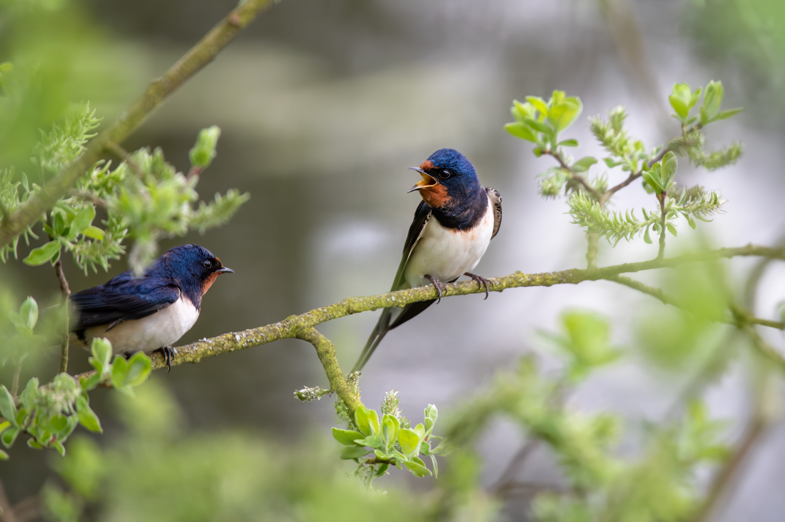
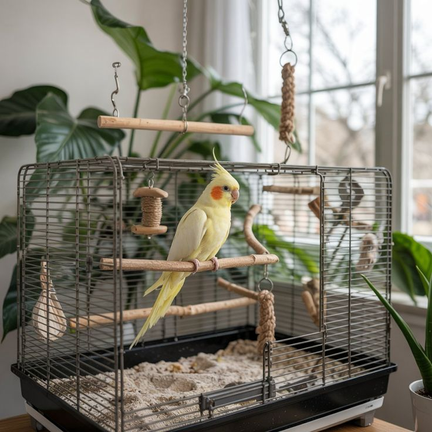
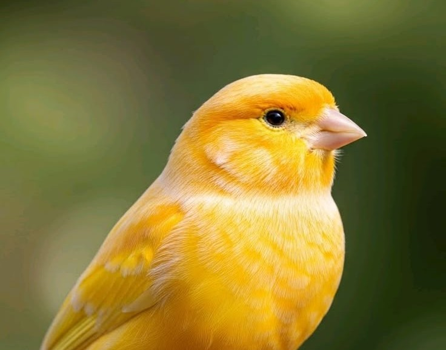
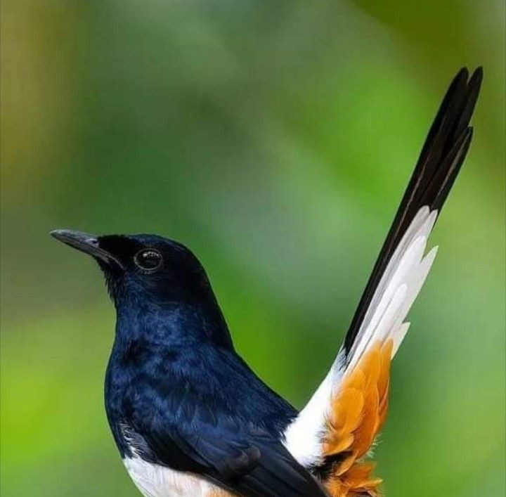
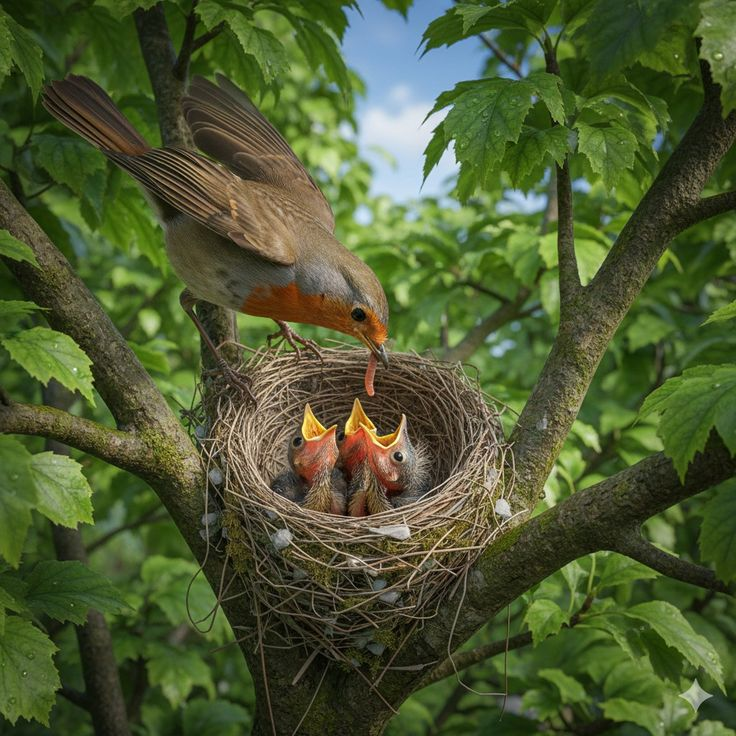
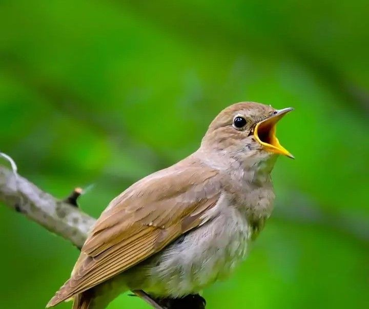
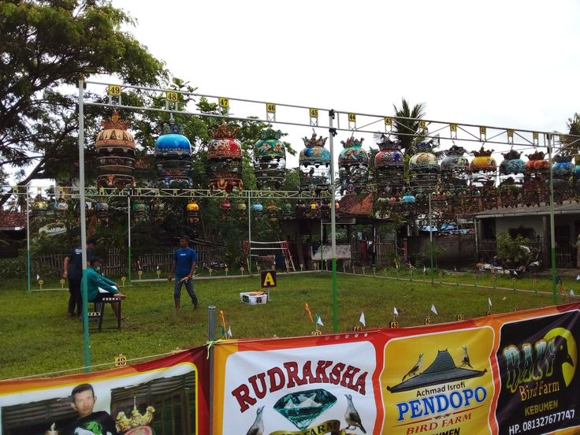

Chirp & Plume
Kami menghadirkan koleksi burung eksotis, perlengkapan premium, dan nutrisi terbaik untuk sahabat kicau Anda. Perawatan penuh kasih mulai dari sini.


Burung lovebird saya sangat sehat dan aktif setelah membeli dari Chirp & Plume. Pelayanannya ramah dan pengirimannya aman. Sangat direkomendasikan!

Kandang Victorian XL yang saya beli kualitasnya luar biasa. Bukan cuma fungsional tapi juga jadi dekorasi ruang tamu yang cantik. Worth every penny!

Konsultasi gratis dengan tim mereka sangat membantu. Saya jadi tahu cara merawat burung murai yang benar. Pakan organiknya terbukti bikin bulu makin mengkilap!


Temukan lebih dari 50 spesies burung pilihan, mulai dari burung kicau lokal hingga burung eksotis langka. Semua bersertifikat resmi dan sehat.
Setiap burung menjalani pemeriksaan kesehatan menyeluruh oleh dokter hewan berpengalaman sebelum dijual. Dilengkapi sertifikat kesehatan resmi.
Burung dilengkapi dengan dokumen legal, surat asal-usul, dan untuk spesies dilindungi disertai izin BKSDA yang sah sesuai regulasi.
Sistem pengiriman khusus hewan hidup dengan kandang transport standar internasional. Tersedia jemput langsung di toko kami.
Jaga suhu kandang antara 20-28°C. Hindari paparan langsung AC atau angin kencang pada burung baru.
Berikan pakan 2x sehari. Kombinasikan biji-bijian dengan buah segar dan sayuran untuk nutrisi seimbang.
Bersihkan kandang setiap hari. Ganti air minum 2x sehari untuk mencegah pertumbuhan bakteri.
Berikan mainan dan interaksi rutin. Putar rekaman kicauan untuk merangsang burung berkicau lebih baik.

Dari kandang mewah hingga pakan organik terpilih. Semua kebutuhan sahabat kicau Anda tersedia di sini dengan kualitas terjamin.
Min. pembelian Rp 200.000 untuk seluruh Indonesia
Pengembalian barang jika tidak sesuai deskripsi
Hanya produk berkualitas tinggi yang kami jual
Tim ahli kami siap membantu konsultasi kapan saja
.jpeg)
Pelajari cara merawat burung kesayangan Anda dengan benar. Panduan lengkap dari pakar burung berpengalaman untuk menjaga kesehatan dan kebahagiaan sahabat berbulu Anda.
Burung adalah makhluk hidup yang sensitif dan membutuhkan perhatian khusus. Perawatan yang tepat bukan hanya menjaga kesehatan fisik, tetapi juga kesehatan mental burung Anda.
Burung yang dirawat dengan baik akan lebih aktif, memiliki kicauan yang merdu, bulu yang mengkilap, dan masa hidup yang lebih panjang. Sebaliknya, perawatan yang buruk dapat menyebabkan stres, penyakit, dan bahkan kematian dini.
Di halaman ini, kami menyajikan panduan komprehensif yang disusun oleh dokter hewan dan pakar burung berpengalaman, mencakup jadwal perawatan harian, tips nutrisi, hingga cara menangani penyakit umum.

Kandang harus cukup luas agar burung dapat merentangkan sayap dengan bebas. Ukuran minimum: 2x lebar rentang sayap. Material stainless atau galvanis anti karat adalah pilihan terbaik untuk ketahanan jangka panjang.
Berikan kombinasi biji-bijian, buah segar, sayuran, dan protein. Jangan berikan makanan manusia seperti garam, gula, atau makanan berlemak. Pakan khusus burung lebih baik dari campuran sendiri.
Ganti air minum 2x sehari minimum. Air kotor adalah sumber utama penyakit pada burung. Gunakan tempat minum yang mudah dibersihkan dan bersihkan dengan sabun setiap hari.
Sebagian besar burung perlu mandi 2-3 kali seminggu. Sediakan wadah mandi dangkal atau semprotkan dengan air bersih. Mandi membantu menjaga kebersihan bulu dan kulit burung.
Jemur burung 1-2 jam setiap pagi (07.00-09.00 WIB). Sinar matahari pagi mengandung UV yang membantu sintesis vitamin D3 untuk tulang yang kuat dan bulu sehat.
Bersihkan kotoran setiap hari, cuci kandang dengan disinfektan seminggu sekali. Lingkungan bersih mencegah penyebaran bakteri, jamur, dan parasit yang dapat menyebabkan penyakit.
Luangkan waktu 15-30 menit sehari untuk berinteraksi dengan burung. Berbicara, menyanyikan lagu, atau sekadar duduk dekat kandang membantu burung merasa aman dan tidak stres.
Jaga suhu antara 20-28°C. Hindari draft angin langsung dan perubahan suhu drastis. Pada malam hari, tutup sebagian kandang dengan kain untuk menjaga kehangatan.
Berikan suplemen vitamin seminggu 2-3 kali, bukan setiap hari agar tidak overdosis. Konsultasikan dengan dokter hewan untuk jenis suplemen yang tepat sesuai spesies burung Anda.
Bawa ke dokter hewan minimal 6 bulan sekali untuk check-up. Kenali tanda-tanda sakit: bulu kusam, tidak mau makan, sering tidur, atau perubahan kotoran. Deteksi dini sangat penting.
| Aktivitas | Frekuensi | Cara | Manfaat |
|---|---|---|---|
| Ganti air minum | Setiap Hari (2x) | Gunakan air matang suhu ruang, cuci tempat minum tiap hari | Mencegah bakteri & penyakit |
| Beri pakan utama | Setiap Hari (2x) | Pagi & sore, porsi secukupnya agar tidak basi | Nutrisi optimal |
| Bersihkan kotoran | Setiap Hari | Alas kandang diganti atau dibersihkan dari kotoran | Higienitas kandang |
| Penjemuran | Setiap Hari | 07:00–09:00, 1–2 jam, hindari siang hari | Vitamin D3, bulu sehat |
| Mandi burung | 3x Seminggu | Sediakan bak mandi dangkal atau semprot ringan | Kebersihan bulu |
| Cuci kandang | 1x Seminggu | Cuci dengan air sabun, bilas bersih, keringkan | Bebas parasit |
| Pemberian vitamin | 2x Seminggu | Teteskan ke air minum sesuai dosis anjuran | Imunitas & stamina |
| Potong kuku & paruh | 1x Sebulan | Gunakan gunting khusus, hati-hati jangan sampai berdarah | Kenyamanan burung |
| Check-up dokter hewan | Setiap 6 Bulan | Bawa ke klinik hewan terpercaya untuk pemeriksaan menyeluruh | Deteksi dini penyakit |

Lovebird adalah salah satu burung paling populer di Indonesia. Warnanya yang cantik dan sifatnya yang aktif membuatnya menjadi pilihan sempurna untuk burung peliharaan pertama Anda. Simak panduan lengkapnya di sini...

Kandang yang salah bisa membuat burung stres. Pelajari cara memilih ukuran, material, dan desain kandang yang ideal...

Deteksi dini penyakit pada burung sangat penting. Kenali gejala, penyebab, dan cara penanganan penyakit yang sering menyerang...

Rahasia burung kicau berkualitas lomba ada pada teknik pemasteran. Simak metode efektif yang digunakan para juara...

Breeding kenari Yorkshire bisa menghasilkan keuntungan yang menarik. Mulai dari persiapan kandang, pemilihan indukan, hingga merawat anakan...

Temulawak, jahe, dan madu ternyata sangat bermanfaat untuk kesehatan burung. Pelajari cara penggunaannya yang aman dan efektif...

Persiapan yang matang adalah kunci sukses di arena lomba. Mulai dari H-7 hingga hari H, begini cara mempersiapkan burung agar tampil prima...







Ada beberapa penyebab burung tidak mau makan: stres akibat perpindahan tempat, perubahan jenis pakan secara mendadak, kondisi sakit, atau cuaca terlalu dingin. Coba kembalikan ke pakan asal dan pastikan suhu kandang hangat. Jika lebih dari 2 hari tidak makan, segera konsultasikan ke dokter hewan.
Idealnya setiap hari selama 1-2 jam di pagi hari antara pukul 07.00-09.00. Sinar matahari pagi mengandung UVB yang membantu produksi vitamin D3. Hindari penjemuran saat matahari sudah tinggi karena bisa menyebabkan heat stroke.
Tanda-tanda umum: bulu mengembang atau kusam, sering tidur di siang hari, tidak nafsu makan, perubahan pada kotoran (terlalu cair/berlendir), mata sayu atau berair, keseimbangan terganggu, dan penurunan berat badan. Jika melihat tanda-tanda ini, segera konsultasikan ke dokter hewan.
Buah-buahan bisa diberikan setiap hari dalam jumlah sedang (sekitar 10-20% dari total pakan). Buah yang baik: apel, pir, pepaya, pisang (tidak terlalu matang). Hindari: alpukat (beracun untuk burung), buah yang terlalu manis atau asam dalam jumlah besar.
Proses penjinakan membutuhkan kesabaran, biasanya 2-4 minggu. Mulai dengan menempatkan kandang di tempat yang sering Anda berada, berbicara pelan tanpa gerakan mendadak, lalu secara bertahap dekatkan tangan. Berikan camilan favorit sebagai reward saat burung mau didekati.
Tergantung spesies. Burung sosial seperti lovebird, parkit, dan finch lebih bahagia dengan pasangan. Burung kicau seperti murai dan kacer justri lebih baik dipelihara sendiri agar fokus berkicau. Interaksi rutin dengan pemilik juga bisa menggantikan kebutuhan sosial burung.
Lihat pengalaman pelanggan lain dan bagikan pengalamanmu juga ✨
Tulis ulasan untuk toko kami
Terima kasih untuk semua pelanggan yang sudah mempercayakan Chirp & Plume. Kami akan terus memberikan yang terbaik!